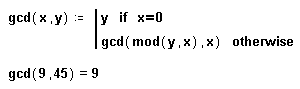

Recursion |
Occasionally, you may find yourself needing to define a function that seems to build upon itself. One such function is the factorial, where the factorial of a given integer x can be expressed as the product of x times all positive integers less than x. Rather than writing a long, complex program that contains similar expressions for each variation, you may be able to write the program recursively.
Recursion is a powerful programming technique whereby a program is defined in terms of itself. Recursive function definitions consist of two parts:
An initial condition to prevent the recursion from extending infinitely, and
A definition of the function in terms of a previous value of the function.
All Mathcad function definitions that depend on a function of the same name define the function in the following priority:
So, if you define
sin(x):= sin(x*π/180)
you will change the value of the sin function for the worksheet, and if you define
f(x):= x/2 then f(x):= f(x) + 1
the second definition of f will be based on the first. If you define a function in terms of itself and there is no previous definition, Mathcad treats it recursively. If the recursion never ends, Mathcad detects the infinite loop and shows an error message. You can either choose different names for functions on either side of a definition, or use the namespace feature to clarify which version of a function you mean.
| Using Recursion |
Recursion is similar to the principle of mathematical induction: if you can get f(n + 1) from f(n), and you know f(0), then you know all there is to know about f.
Sometimes, functions which don't seem recursive on the surface can be written recursively, such as the greatest common denominator function:

Keep in mind, however, that despite their elegance and conciseness, recursive function definitions are not always computationally efficient. You may find that an equivalent definition using an iterative loop evaluates more quickly.